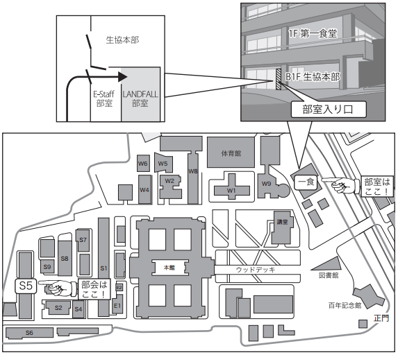

LANDFALL(ランドフォール)は、東工大の研究室の紹介を目的としたフリーペーパーです。
その編集委員会である当サークルは、年に3回ほどLANDFALLの制作・発行を行なっています。
LANDFALLでは研究室紹介冊子を作成しています。 活動内容は大きく4つに分けることができます。
円滑に取材を進めるため、事前に資料を読み込んで勉強会を行います。
取材は基本的に教授の研究室で行います。勉強したことをもとに、わからない部分などを質問します。
教授のお話をこんなにも近距離で聞ける機会は学部1年の間にはほとんどありません。 LANDFALLならではの経験となります。
取材した内容を分かりやすい日本語にします。これがLANDFALLでメインとなる工程です。
その際には、初学者の人でも読めるような文章を目指し、執筆・推敲を行います。
読み手を想定して文章を書く・批評するという経験は、将来論文を執筆するときにも役に立つ財産となるでしょう。
文章では伝わりにくいものを解説するために必要な図や表を作ります。
その他には本誌の表紙や、3月に配布した『TOKOWORKER』全体のデザインなども行います。
デザインがしたくて入部する部員も毎年複数人存在します。
毎週水曜日の昼休みに集まり、記事の進捗状況の確認を行います。 部員全体で記事の進捗状況を共有することで記事に遅れが出ることを防ぎます。
また、部会後には各研究室記事の制作メンバーごとに集まり、記事の内容について話し合うことが多いです。
新入生の皆さんにLANDFALL編集委員会の様子を知ってもらうため、4月中は毎週水曜日に行なっている部会の様子を公開します。
また、それとは別に親睦を深めるために参加費無料の新歓パーティを行います。
その日時と場所は以下の通りです。
公開部会に興味のある方は直接講義室までお越しください。講義室の場所がよくわからない場合は、12:30頃に本館正門前に集合してください。 部員が講義室まで案内いたします。
部会を行う講義室や、部室の場所は下の地図を参考にしてください。
部室訪問の際には連絡は不要です。いつでも歓迎いたします。
